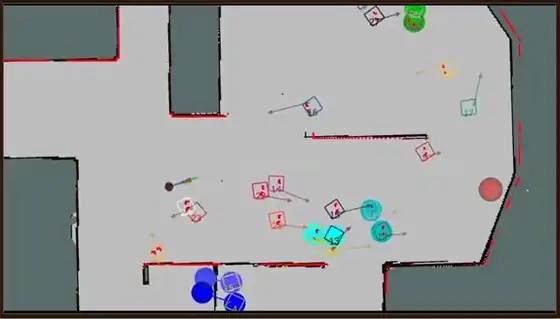

All Publications
Papers and preprints.
-

arXiv preprint, 2026LiDAR-only crowd navigation that scores candidate trajectories by their predicted collision risk.
Efficient crowd navigation requires anticipating dynamic collision-free space without relying on fragile object tracking. We propose the Don't Risk It Planner (DRIP), an end-to-end LiDAR-only planning framework that couples occupancy forecasting with trajectory-conditioned clearance and uncertainty estimation. Operating directly on LiDAR-derived occupancy grid histories, DRIP predicts a distribution over minimum robot-obstacle clearance for candidate control sequences to evaluate collision risk. The model is trained using a risk cost that grounds predictive uncertainty directly in empirical collision outcomes rather than geometric regression alone. In closed-loop experiments with up to 45 pedestrians, DRIP achieves higher success rates with fewer collisions and reduced freezing behavior compared to state-of-the-art baselines.
-
 IEEE International Conference on Robotics and Automation (ICRA), 2026
IEEE International Conference on Robotics and Automation (ICRA), 2026Flow-matching trajectory generation with a learned human-likeness score for selecting among trajectories.
Safe and computationally efficient local planning for mobile robots in dense, unstructured human crowds remains a fundamental challenge. Moreover, ensuring that robot trajectories are similar to how a human moves will increase the acceptance of the robot in human environments. In this paper, we present Crowd-FM, a learning-based approach to address both safety and human-likeness challenges. Our approach has two novel components. First, we train a Conditional Flow-Matching (CFM) policy over a dataset of optimally controlled trajectories to learn a set of collision-free primitives that a robot can choose at any given scenario. The chosen optimal control solver can generate multi-modal collision-free trajectories, allowing the CFM policy to learn a diverse set of maneuvers. Secondly, we learn a score function over a dataset of human demonstration trajectories that provides a human-likeness score for the flow primitives. At inference time, computing the optimal trajectory requires selecting the one with the highest score.
-
 ICRA 2026 Workshop on Bridging the Gap between Robot Learning and Human-Centered Robotics, 2026
ICRA 2026 Workshop on Bridging the Gap between Robot Learning and Human-Centered Robotics, 2026